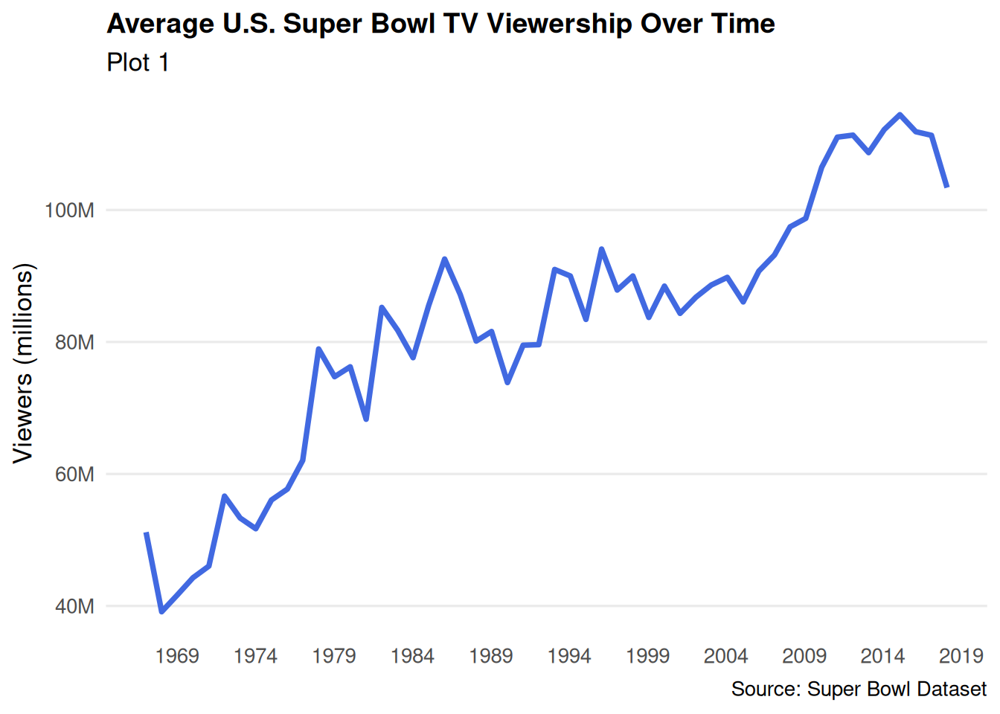
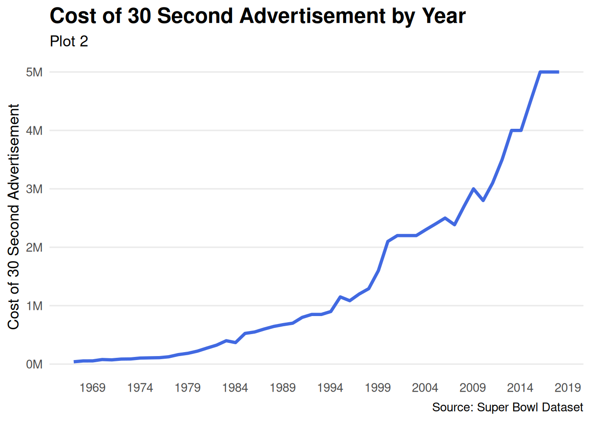
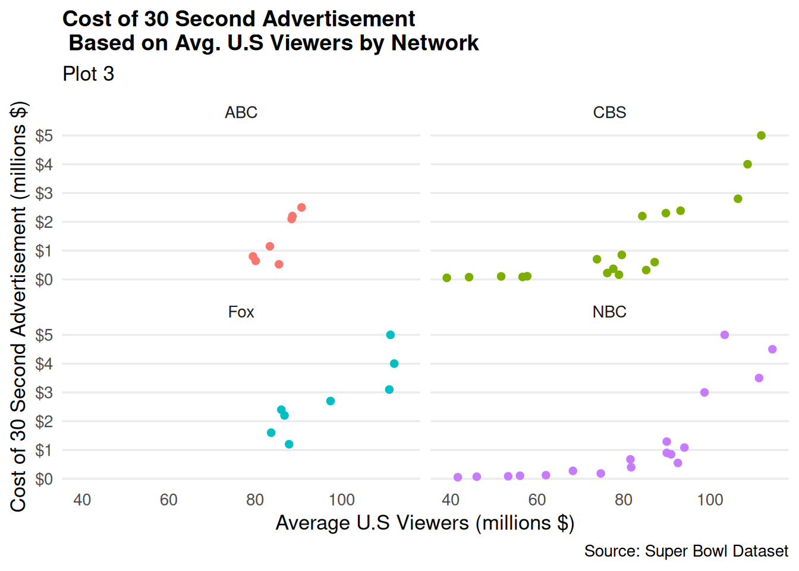
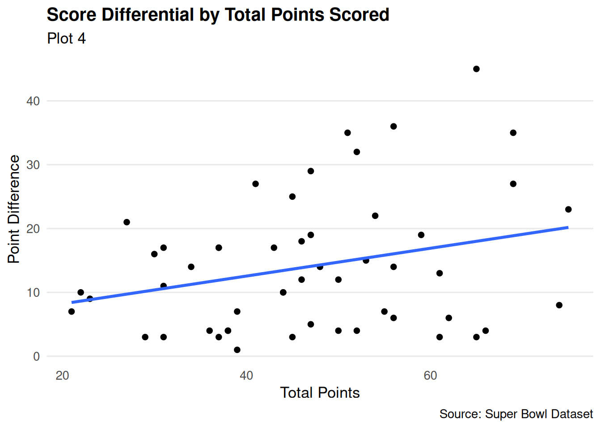

Super Bowl Economics and Game Dynamics: Trends in Advertising Costs and Scoring Patterns
Report
Introduction
The Super Bowl is one of the most widely viewed sporting events in the US, making it one of the most valuable events for advertisers. Companies invest millions of dollars for just seconds during the Super Bowl, and the costs of the ads have changed dramatically over time. In this project, we aim to understand how advertising prices have evolved and what possible factors have contributed to these changes.
This project uses Kaggle’s “Super Bowl Game Results” dataset. The dataset includes information on date, location, scores, broadcast networks, and the cost of 30-second advertisements, and many other columns, which is more than enough for analyzing both economic and game-related factors.
The primary research question guiding this analysis is:
How have Super Bowl advertising costs evolved, and are game characteristics, such as scoring and competitiveness, related to one another?
To address this question, two hypotheses are examined. First, we test whether there is a relationship between time (year) and the cost of a 30-second Super Bowl advertisement. Second, we investigate whether there is a relationship between margin of victory and total points scored, to determine whether more competitive games tend to be higher scoring.
Data
The data used in this project comes from the “Super Bowl Game Results” dataset on Kaggle, which aggregates publicly available information from NFL records, broadcast networks, and media rating organizations. The dataset includes 52 observations, each representing a Super Bowl game from 1967 (Super Bowl I) through 2018 (Super Bowl LII), and contains 19 variables describing game outcomes, scoring, attendance, broadcast details, and advertising costs.
Key Variables: Date: The date on which each Super Bowl was played Winning Team Points / Losing Team Points: Points scored by each team Average U.S. Viewers: The average number of television viewers in the United States Network: The television network broadcasting the game (categorical) Cost Per 30s Ad: The cost (in U.S. dollars) of a 30-second advertisement slot
Additionally, we added/mutated a few variables: Year: Extracted from the game date Margin of Victory: Difference between the winning and losing team points Total Points: Sum of points scored by both teams
Data Cleaning: Converted the date variable into a standard date format Removed unnecessary variables, including index, conference labels, venue, city, and notes, to simplify the dataset Converted average US viewers to a numeric format



Summary Statistics: Hypothesis 1, Plot 2
r r2 sx sy b1
1 0.9307204 0.8662405 15.15476 1499618 92098.15Summary Statistics: Hypothesis 2, Plot 4
r r2 sx sy b1
1 0.280887 0.0788975 13.53577 10.49176 0.2177192Analysis
Hypothesis 1 The first hypothesis guiding this project was that there would be no relationship between year and the cost of a 30-second Super Bowl advertisement, with the alternative hypothesis proposing that advertisement costs increase over time. To evaluate this, a line plot (Plot 2) was created displaying Super Bowl year on the x-axis and the cost of a 30-second advertisement on the y-axis, along with a fitted regression line.
Plot 2 reveals a strong, positive, nonlinear relationship between advertisement costs and Super Bowl years. The data indicates that as the years progress, the price of advertising during the Super Bowl rises substantially. The summary statistics also strongly support this interpretation. The correlation coefficient between year and advertisement cost was calculated as R = 0.931, indicating a very strong positive relationship between the two variables. The coefficient of determination was R² = 0.866, showing that approximately 86.6% of the variation in advertisement cost is associated with year. Plot 3 further demonstrates that a strong, positive, linear relationship between advertisement costs and Super Bowl years holds within ABC and Fox, along with a strong, positive, nonlinear relationship between advertisement costs and Super Bowl years for CBS and NBC.
The graphical and numerical analyses provide compelling evidence against the null hypothesis. The strong, positive, nonlinear correlation and the high coefficient of determination demonstrate that advertisement costs have risen steadily over time. We therefore reject the null hypothesis, as Super Bowl advertising costs increase as time progresses.
Hypothesis 2 The second hypothesis guiding this project was that there would be no relationship between margin of victory and total points scored with the alternative hypothesis proposing the opposite. To investigate this, Plot 4 displays a scatter plot of total points scored on the x-axis and margin of victory (point differential) on the y-axis, with a linear fit line overlaid for comparison. At first glance, Plot 4 demonstrates a weak positive association that is not strong enough to be practically meaningful. The points on the graph depart noticeably from the linear fit, suggesting that a straight-line model is not an appropriate characterization of the relationship, and that any association present is non-linear and inconsistent across the range of values.
Our summary statistics support this visual interpretation. The correlation coefficient (R = 0.280) indicates a weak positive association between margin of victory and total points scored. Additionally, the coefficient of determination (R² = 0.078) reveals that margin of victory accounts for only approximately 8% of the variance in total points scored, meaning the vast majority of scoring variation is explained by other factors entirely.
Discussion
Hypothesis 1 Our analysis suggests that the cost of a 30-second Super Bowl advertisement has generally increased over time, as evidenced by Plot 2, and as viewership has increased over time, as evidenced by Plot 1; this finding also holds regardless of the broadcasting network. The strong relationship between year and cost we identified in our analysis suggests that companies are increasingly willing to invest in Super Bowl advertising, which could be related to its ability to consistently reach larger audiences over time.
The statistical methods and visualizations used in this analysis were appropriate to examine trends over time; however, there are several limitations to this analysis. Since the data is purely observational, it cannot definitively be stated that increasing years or larger audiences cause higher advertisement costs, but rather that they are associated. Furthermore, the relationship between time and cost of advertisement appears to exhibit some exponential behavior, so a linear model may not fully capture the relationship. However, it is important to consider that this relationship may be partially driven by technological advancements that expanded Super Bowl viewership and access across platforms, increasing advertising demand and costs; thus, the model also may not accurately predict future trends if this growth begins to level off. Other variables may also influence advertising costs more than merely viewership and time. More specifically, the data set we used does not account for inflation; thus, any observed increases in advertisement cost do not account for changes in the value of money. One way to improve this analysis could be to adjust for inflation to better understand the real advertisement cost increase over time.
Future research could focus on advertising costs and viewership in addition to other market-related variables, such as brand engagement or visibility, to clarify why companies are willing to pay more, specifically, in terms of how those advertising investments translate into market outcomes.
Hypothesis 2 This portion of the analysis examined Super Bowl data to see whether game competitiveness, measured by point difference, had a significant relationship with high-scoring games. Overall, there is a weak relationship between the two variables (Plot 4), which suggests that game competitiveness is not a strong predictor of how many points are scored. This highlights the complex nature of high-level football games, where the score is influenced by factors beyond competitiveness; this includes offensive strength, defensive performance, and strategic decision-making. For example, a strong defense game may result in low scoring regardless of how close it is, and a high offense game may result in a high score even if one team wins by a large margin. The Super Bowl’s high-pressure environment may also contribute to variability in game play that is not captured by the margin of victory alone.
There are also several limitations to this analysis that should be considered. The data set includes a relatively small number of observations, with only one game per year out of all professional games, which limits the generalizability of the findings. The analysis also uses a simple linear model, which may not fully capture nonlinear relationships and more complex relationships with other variables that may significantly influence scoring outcomes. Overall, future research could incorporate additional variables and more advanced methods to better understand the factors that influence scoring outcomes in high-stakes games to make better predictions for fans, coaches, and players.